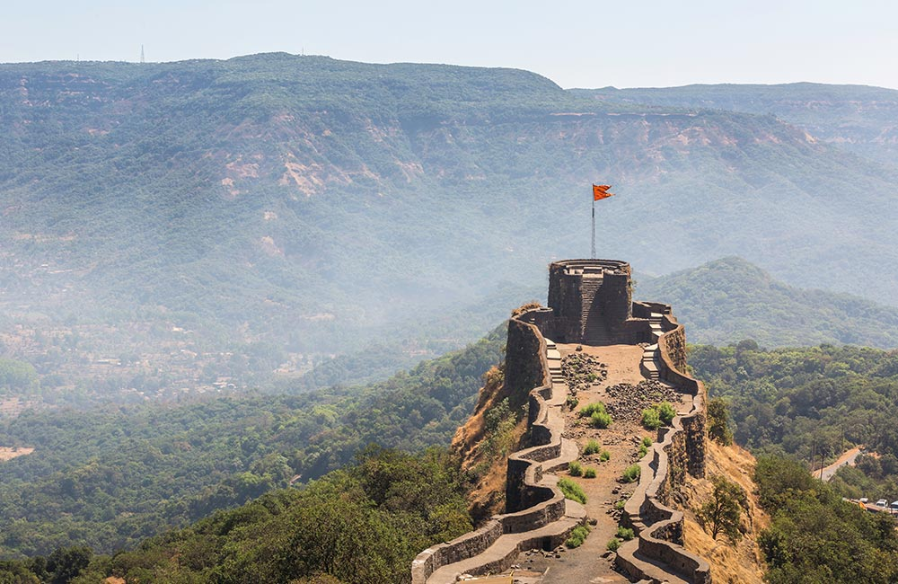
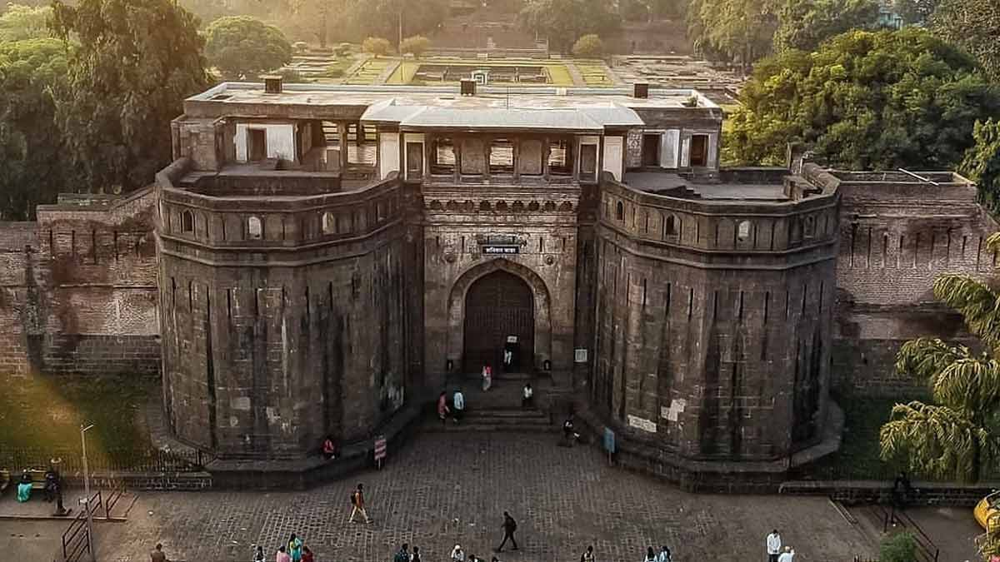

Our Packages for Tour
SHIRDI

Places to visit in Shirdi...
1.Shree Sai Baba temple 2.Wet N Joy waterpark 3.Saitirth devotional theme park
Shirdi is a city and pilgrimage site in Maharashtra.It has Indian satguru Sai Baba's samadhi mandir.
It is located in the Rahata taluka of Ahmednagar District. Shri Saibaba Sansthan Trust is located in Shirdi.
Every day, over 60,000 tourists and devotees from all faiths and religions throng to the temple.
Dwarkamai Mandir, where Baba lived, with a temple inside, is the only one of its kind and importance in India.
There is a Gurusthan under the Neem tree where,original samadhi of his own guru is located and Where Baba was found during his Balyog
Duration=2days 1night.
Tour fees=
Rs:3000/-Rs:2500/- per person only
Payment option
MAHABALESHWAR

Places to visit in Mahabaleshwar...
1.Mahabaleshwar Hill station 2.Venna lake 3.Sunrise and Sunset point 4.Pratapgarh fort
Mahabaleshwar is a major place of tourism in Maharashtra. Attractions include many hill side look out points
This is only place where both sunrise and sunset can be seen.
Top Attractions in mahabaleshwar1.Venna lake for boating which is sorrounded by market and food stall.
Old Mahabaleshwar is a place of pilgrimage with its Mahadeo temple.
The temple is the source of the five rivers Krishna, Koyna, Venna, Savitri and Gayatri.
The Mahabaleshwar strawberry was granted the geographical indication (GI) tag in As a popular tourist destination
Duration=3days 2nights.
Tour fees=
Rs:6000/-Rs:5000/- per person only
Payment option
PUNE

Places to visit in Pune...
1.Dagdushet Halwai ganpati 2.ISKCON temple 3.Sinhagad fort 4.Laal Mahal 5.Shaniwar wada
Pune is the second largest city of Maharashtra,It is surrounded by the Sahyadri Mountain range.
It is homes numerous forts and wadas highlighting typical Maratha architecture.
Forts are one of the main attractions including Lohagad and Visapur Forts.
It also has rich cultural and spiritual history with many temples and ashrams spread across the city.
Pune is the cultural capital of the Indian state Maharastra. The city is known as the "Oxford of the east".
Duration=2days 1night.
Tour fees=
Rs:4000/-Rs:3000/- per person only
Payment option
ALIBAUG

Places to visit in Alibaug...
1.Alibaug beach 2.Kaluba beach 3.Murud-Janjira fort 4.Kanakeshwar forest 5.Kokan
Alibaug is a coastal city and a municipal council in Raigad distric.
It is the headquarters of the Raigad district and is south of the city of Mumbai.
Alibag is part of the Mumbai Metropolitan Region and is situated at a distance of about 96 km from Mumbai and 143 km from Pune.
Alibag is a holy place for Goddess Shree Padmakshi Renuka. She is also known as goddess of Konkan.
Duration=2days 1night.
Tour fees=
Rs:5000/-Rs:4500/- per person only
Payment option